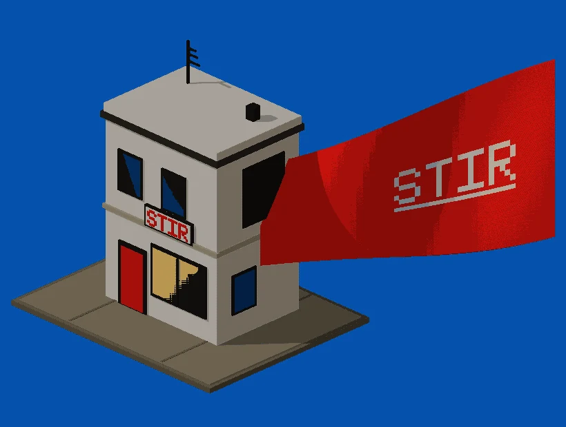
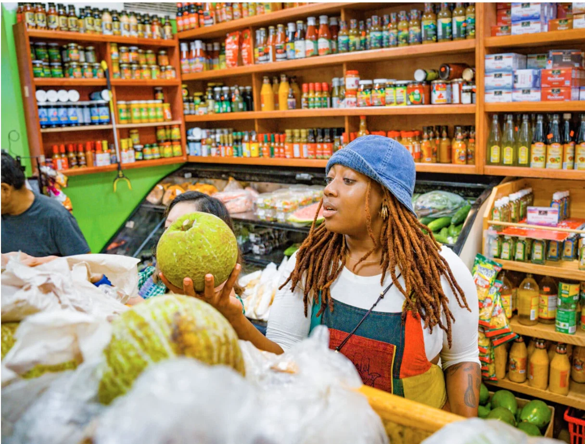

ATTENTIONSHOULDPAY.
STIR connects brand, content and digital presence for independent businesses.

Three entrances, one studio
Businesses firstThe work connects what people see online with what happens at the market.
A neighborhood market.
A much larger reach.

STIR leads LABAY’s creative direction and digital channels, produces short-form content, manages its website and e-commerce work, and coordinates wholesale account relationships.
-
Kemoy Martin Featured LABAY Watch ↗ on Instagram, opens in a new tab
-
Nicolas Nuvan Featured LABAY Watch ↗ on Instagram, opens in a new tab
-
MarcosWorldNyc Featured LABAY Watch ↗ on Instagram, opens in a new tab
Creators who featured LABAY are not automatically STIR clients. Per-clip coordination credits are not resolved, so this does not claim STIR arranged every one.
-
Nike Tennis August 2026 · Marcy Playground, Brooklyn · Produced by Kindred
STIR developed the menu and concept, coordinated staffing, and ran LABAY’s stand on the day.
-
Hoopbus × Red Bull Nostrand Avenue, Brooklyn
STIR coordinated LABAY’s participation and the street-closure arrangements.
-
NYC Health + Hospitals South Brooklyn Health
STIR produced and managed LABAY’s participation.
It happened on our watch.
Selected coverage of the market. This is press about LABAY — it is not an award for STIR.
A business with something worthwhile, and a partner with room to shape it.
Most of this work is connected: the way a business is positioned shows up in its content, and the content only pays if the website and the channels behind it can take the weight. STIR works across those at once rather than handing over one piece and leaving.
A clearly defined single project is a valid way to start. Scope, responsibilities and capacity are agreed for each engagement — LABAY shows how wide the relationship can go, not what every engagement includes.
Find → Build → Run
Find
Understand the business, its customers and what actually needs to move first.
Build
Make the agreed work: positioning, identity, content, the site behind them.
Run
Keep it moving — support, review and the next round of work.
Led by Rasheed Jordon.
Built in Brooklyn.
A founder-led practice, not an agency. The reason the creative judgment and the operating reality line up is that both have been done here — the same hands on the brand and on the business it belongs to.
STIR is building a network of creators and collaborators around the work. A very small following is welcome; a relevant perspective or a specific contribution can matter more than audience size. Expressing interest is a review for future project fit — it is not an open role, a placement or a promise of payment.
What are you building?
Tell STIR about the business and what you’d like to change. Every inquiry gets read.